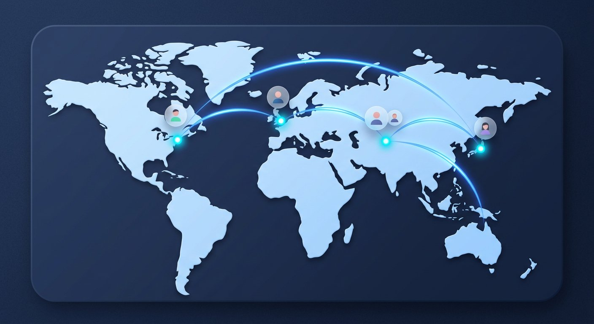
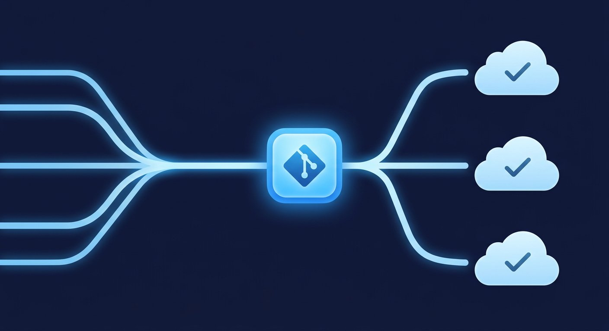
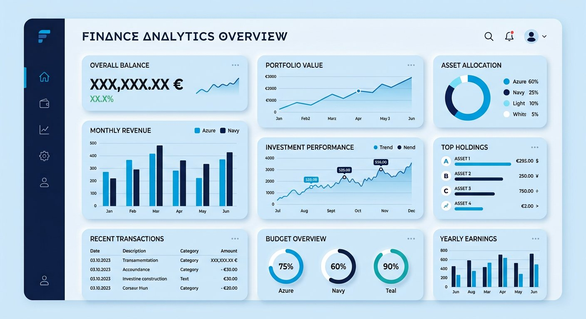
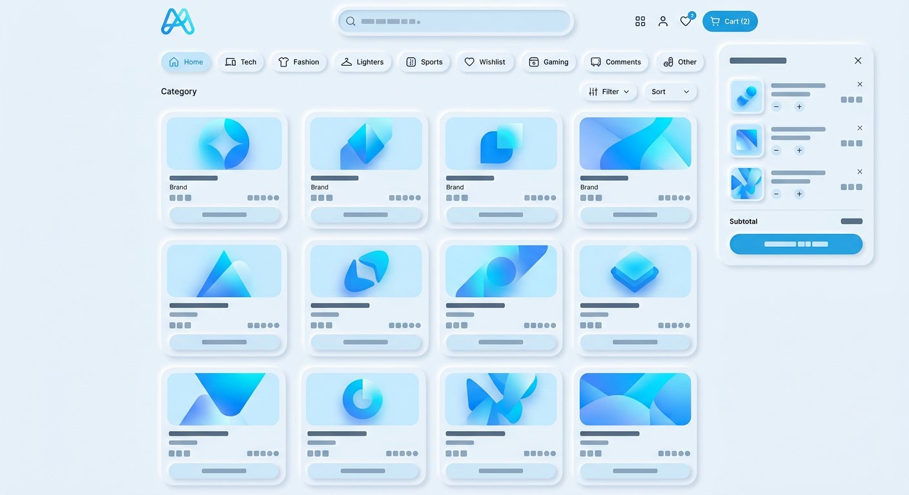
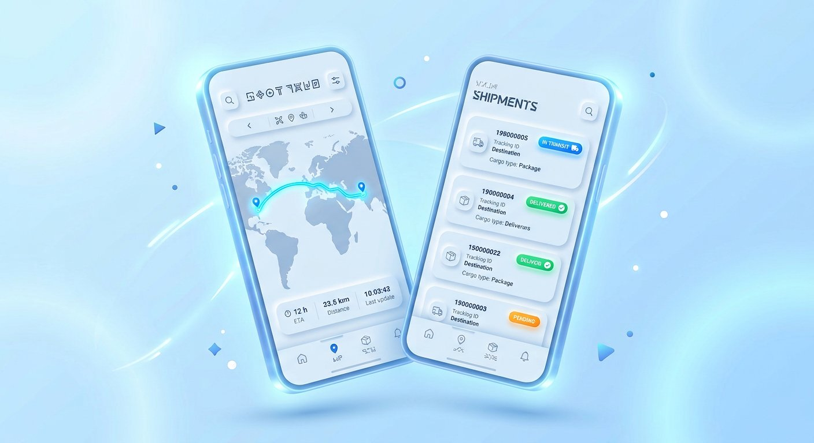

Web dasturlash
Tezkor, xavfsiz va kengaytiriladigan web ilovalar: SPA, SSR, API va admin panelgacha.
Multiple Remotes — dunyoning turli burchaklarida ishlaydigan dasturchilar, dizaynerlar va DevOps muhandislari jamoasi. Biz mahsulotlarni noldan yaratamiz, kodni bir nechta git remote va mirror repolarga sinxronlaymiz va 24/7 uzluksiz yetkazib beramiz.

Git'da bir nechta remote — bu kodning xavfsiz, tezkor va ishonchli tarqalishi demak. Biz ham xuddi shunday ishlaymiz: jamoamiz Toshkent, London, Berlin, Dubay va Tokioda joylashgan, ish jarayoni esa hech qachon to'xtamaydi. Quyosh botgan joyda ishni boshqa vaqt mintaqasidagi hamkasb davom ettiradi.
Biz faqat kod yozmaymiz — biznesingiz uchun to'liq raqamli yechim quramiz.
Tezkor, xavfsiz va kengaytiriladigan web ilovalar: SPA, SSR, API va admin panelgacha.
iOS va Android uchun cross-platform ilovalar — bitta kod bazasi, ikki do'kon, yuqori sifat.
Kodingizni GitHub, GitLab va xususiy Git serverlarga bir vaqtda sinxronlaymiz: mirror push, backup va disaster recovery.
Avomatik test, build va deploy pipeline'lari. Zero-downtime relizlar va auto-scaling infratuzilma.
Soft UI'dan tortib korporativ design tizimgacha — foydalanuvchi sevib ishlaydigan interfeyslar.
Follow-the-sun modeli bilan 24/7 monitoring, alerting va texnik yordam — tizimingiz hech qachon uxlamaydi.
Har bir loyiha — real biznes muammosiga topilgan aniq texnik yechim.

Bizning flagman open-source vositamiz: bitta buyruq bilan repozitoriyni GitHub, GitLab va xususiy Gitea serverlariga sinxronlaydi. 4 200+ yulduzcha, 90+ kontib'yutor.

To'lov kompaniyasi uchun real vaqtdagi tranzaksiya monitoringi: kuniga 1.2 mln tranzaksiya, 99.98% uptime, 3 regionda mirror deployment.

Markaziy Osiyo bozori uchun ko'p tilli marketplace: 200+ do'kon, 4 valyuta, bir haftalik sprintlardan iborat to'liq remote ish jarayoni.

Xalqaryuk tashuvchi kompaniya uchun haydovchi va dispetcher ilovasi: jonli GPS kuzatuv, offline-first rejim va push orqali hujjat almashinuvi.
Jamoa a'zolari turli vaqt mintaqalarida ishlaydi — ish jarayoni estafeta kabi uzluksiz davom etadi.
Qaysi soat bo'lishidan qat'i nazar, jamoaning bir qismi albatta onlayn.
Biznes maqsadlaringizni tinglaymiz, texnik audit o'tkazamiz va aniq yo'l xaritasini tuzamiz.
Interaktiv prototip, UI kit va design system — kod yozishdan oldin hammasini sinab ko'ramiz.
Haftalik sprintlar, code review va multi-remote sinxronizatsiya — kod doim xavfsiz va tarqalgan.
Zero-downtime deploy, monitoring va follow-the-sun support — mahsulot barqaror o'sadi.
«Multiple Remotes bilan ishlaganimizdan beri relizlarimiz haftasiga 3 martadan 15 martagacha ko'tarildi. Multi-remote CI/CD tizimlari haqiqiy game changer.»
«Biz London'da kechqurun muammo yuboramiz — ertalabga qadar Tokiodagi jamoa uni hal qilgan bo'ladi. Follow-the-sun modeli shunchaki reklama emas ekan.»
«Marketplace'imiz 4 oyda noldan 200 do'kongacha o'sdi. Jamoa har hafta aniq hisobot berib bordi — hamma narsa shaffos va o'z vaqtida.»
Yangi mahsulotmi, mavjud tizimni yangilashmi yoki multi-remote infratuzilma kerakmi — 24 soat ichida javob beramiz.